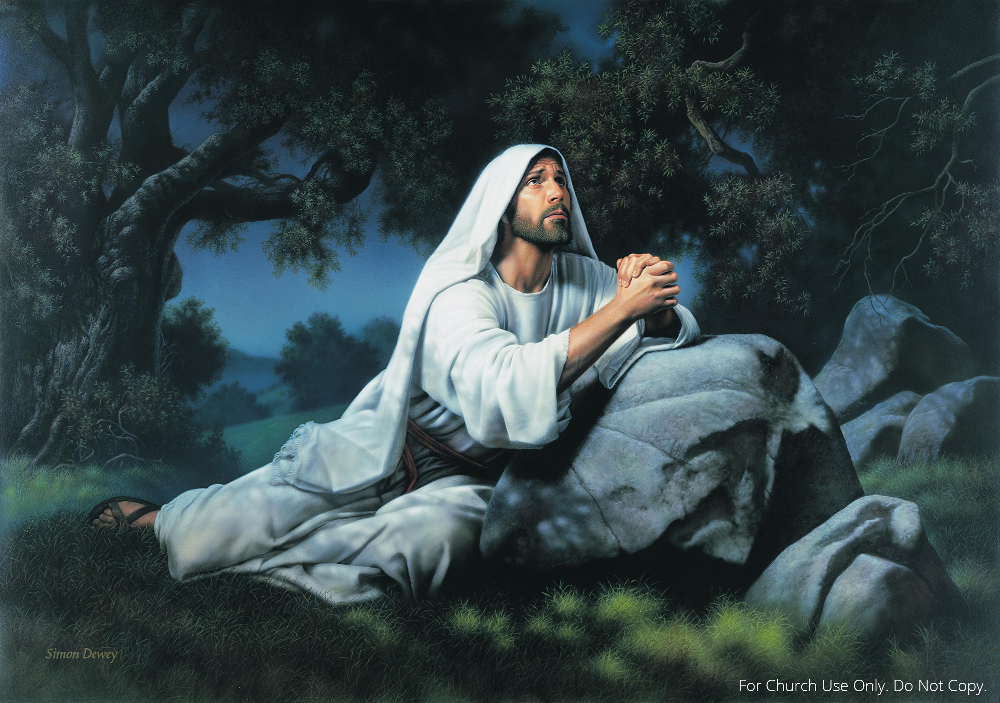
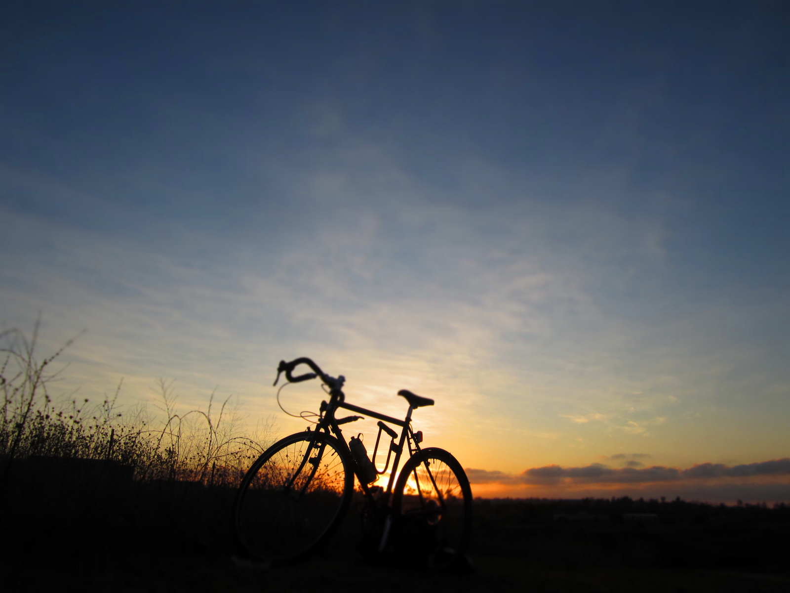

He's Been There Before
  He's Been There Before by Elder Troy Whittle
The alarm bell rings at 6:30, I stumble to my feet
I grab my companions bedding and pull off his sheets
A groan fills the room, is it already time to arise?
It seems like just a second ago I was able to shut my eyes
The morning activities follow- study, prayer and such
When it's time to leave the apartment, you feel you haven't accomplished much
"We have a super day planned," My comp. says with a grin
I lowly utter a faithless breath, "Yeah, if anyone lets us in."
With the word of God and my faithful Schwinn, we ride off in the street prepared to
Face another day of humidity and heat
It's 9:30 in the evening, the day is almost through
My champion and I are riding home not accomplishing what we thought to do
We ride up to the mailbox, hoping to receive a lot
Only to look inside and hear my echo reverberate "air Box"
We go up to our apartment, the day is now complete
The only thing to show for our work is a case of blistery feet
It's past 10:30 p.m. My companion is fast asleep,
Silence engulfs me all about and I begin to weep
In the midst of sadness, I kneel down to pray
I need to talk to father, but I'm not sure what to say
"Oh, Father" I begin, "What happened to us today?
I thought we'd teach somebody, but everyone was away
My hands, my aching hands- worn, hurt and beat;
If our area was any smaller, we'd have knocked every street"
"Why on missions are the days so much alike?
The only difference about today was the flat tire on my bike
Will you send some cooler weather? The heat is killing me
I sweat so bad, it gets in my eyes, it's very hard to see"
"Why do I have to wear a helmet, isn't your protection enough?
People always laugh at me, and call me stupid stuff
Please send us investigators so I may give them what they lack
I want to give them Books of Mormon, the weight of them hurts my back"
"And what about my family: They don't have much to say
I'm sick of not hearing from home day after day after day
Oh Father, Why am I here am I just wasting time?
Sometimes I just want to go home, I'm sorry but that's on my mind"
"My companion, Heavenly Father, what are you giving me?
"The way he rides his bicycle, I don't think he can see
Now you have it, I can't go on, I don't know what to do
That, my Father in Heaven, is the prayer I have for you"
My prayer now finished, I stand up, then jump right into bed
I need my rest for tomorrow, we have another long day ahead
Sleep start to overtake me, I seem to drift away
Then it seems a vision takes me to another time in another day
I'm standing alone on the hill. The view is very nice
A man walks to wards me and says, "My name is Jesus Christ"
Tears of joy well up inside, I fall down to His feet
"Arise," He states, "Follow me to the shade. You and I need to speak"
My attention's towards my Savior, total and complete
He says, "Your mission is similar of what happened to me
I understand how you feel, I know what you're going through
In fact, it would be fair to say I've felt the same as you"
"I even know how you felt when no one listened to you
At times I felt not quite sure what else I could do
I know you don't like to ride a bicycle, for you a car would be sweet
Just remember the donkey I rode wasn't equipped with 21 speeds"
"I understand you don't like sweating, in fact it's something you hate
I remember when I sweat blood from ev’ry pore, oh the agony was great!
I see you don't like your companion- you'd rather have someone else-
I once had a companion named Judas who sold my life for wealth"
"It's hard to wear a helmet and have people make fun of you
I remember when they put thorns on my head and called me King of the Jews
So you feel burdened down by the weight of your pack
I recall how heavy the cross was when they slammed it on my back"
"Your hands hurt from tracting and knocking on doors all day
I guess when they pounded nails into mine, I ached in a similar way
It's hard not to hear from home when your family's not there to see
I lost communication on the cross and cried, "Father, why hast Thou forsaken me?"
"We have a lot in common, but there's a difference between us you see
I endured to the end and finished my mission, so follow and do like me"
He embraced me with His arms and His light filled me with His love
With tears in my eyes I watched as He went back to the Father above
I stood with awe and wonder when a beep rang in my head
I listened and heard the alarm, then realized I was in my bed
My companion let out a groan, "6:30 already, no way!"
I sat up and said, "Come on, I'll even carry your scriptures today!"
No matter what we go through, when we feel we can't take more
Just stop and think about Jesus Christ, He's been there before
By Elder Troy Whittle
Texas Houston Mission